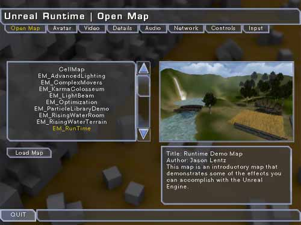
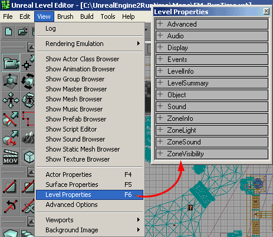
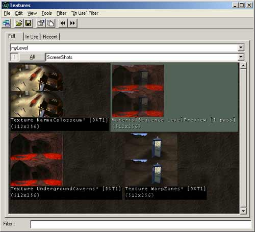
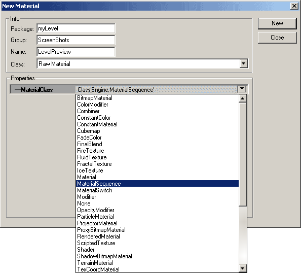
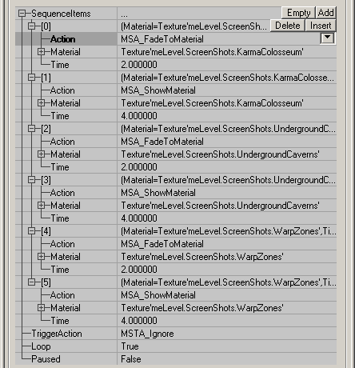

UDN
Search public documentation:
LevelPreviewTutorial
Interested in the Unreal Engine?
Visit the Unreal Technology site.
Looking for jobs and company info?
Check out the Epic games site.
Questions about support via UDN?
Contact the UDN Staff
Level Preview Tutorial
Document Summary: A short guide on how to set up LevelPreview information and screen shots. Document Changelog: Last updated by Jason Lentz (DemiurgeStudios?), to update changes in UnrealEngine2 Runtime. Original author was Jason Lentz (DemiurgeStudios?).Introduction
This document describes the various ways you can set up Level Preview information in some of the various builds of the Unreal Engine, including how to set up elaborate Level Preview Screenshots. This document assumes that you are familiar with the Texture Browser and know how to create and use new Materials.
Level Preview Information
To access the Level Preview information go to the View menu at the top of the editor and open the Level Properties (or hit F6).
Under LevelSummary you can enter the basic information for your level. The Author and Title fields will show up in the Level Preview screen on the right when the map file name is highlighted on the left (see above image for an example). The HideFromMenus and RecommendedNumPlayers fields appear to have no affect, but other fields should be able to be integrated into your build if you so desire and your programmers are willing. Under the LevelInfo tab you can enter a brief descriptive paragraph into the LevelEnterText field. This will be shown directly beneath the Title and Author of the map in the Level Preview screen. You may also need to set the DefaultGameType in order for your map to show up in the Level Preview screen (for instance DeathMatch in a UT2K3 map).Screen Shot Preview
Lastly you can include a screen shot with your level preview information. There are however a few restrictions to what sort of image you can use for your screen shot depending on what version of Unreal you are using. If you are using the Runtime build you will have the following restrictions:- the Level Preview name must be "Screenshot"
- it must be saved in the myLevel package
- size must be 256x512
- it must be saved in the myLevel package
Animated Screenshot
To create an animated Screenshot you will need to import a series of 256x512 Textures, one for each frame of the animation. All give them the same name except at the end include "_A00", "_A01", "_A02", and so on for as many frames as you have. Then assign the first image to the Screenshot field under LevelInfo and the Level Preview Screenshot will cycle through the frames creating an animated Screenshot looping back to the first one when it reaches the last texture. Note that since this requires changing the name of the Texture to something other than "Screenshot," this feature will not work for Level Previews in the Runtime build.Fade Transition Screenshots

To create a Level Preview Screenshot that fades between different images, you will need to create a MaterialSequence Material. To do so, bring the Texture Browser to the front, click on "New," and then select "MaterialSequence" from the MaterialClass pulldown.
Next, open your new MaterialSequence's properties window and "Add" twice as many "SequenceItems" as you have frames that you want to fade between. The first of each image pair will be used to fade from the preview image, so be sure to set the "Action" in the properties of the MaterialSequence to MSA FadeToMaterial. Also you will need to set the "Time" of each SequenceItem. 2 seconds for the fading images and 4 seconds Above you can see three images combined to form a MaterialSequence that fades between them. Directly below you can see the properties for that MaterialSequence.
Once you have your MaterialSequence set up to your liking, just assign it to the Screenshots section in the Level Properties.